Yoto shelf
All 37 playlists, ranked for a 2-year-old with a speech delay — speech value first, then age fit.

His home language, and the only set built around stated therapy goals — 樂在課中's songs each name their target. Start here.

Morning to bedtime in Cantonese. Routines are where words stick, because they repeat at the same time and place.
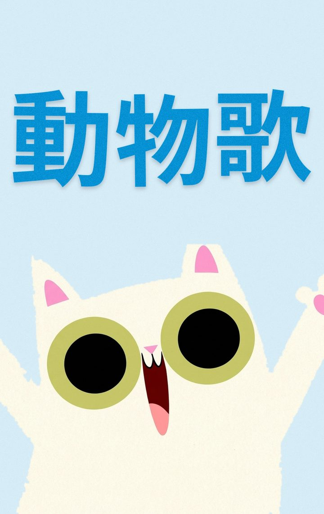
Animal names and sounds — the fastest imitation win in any language.
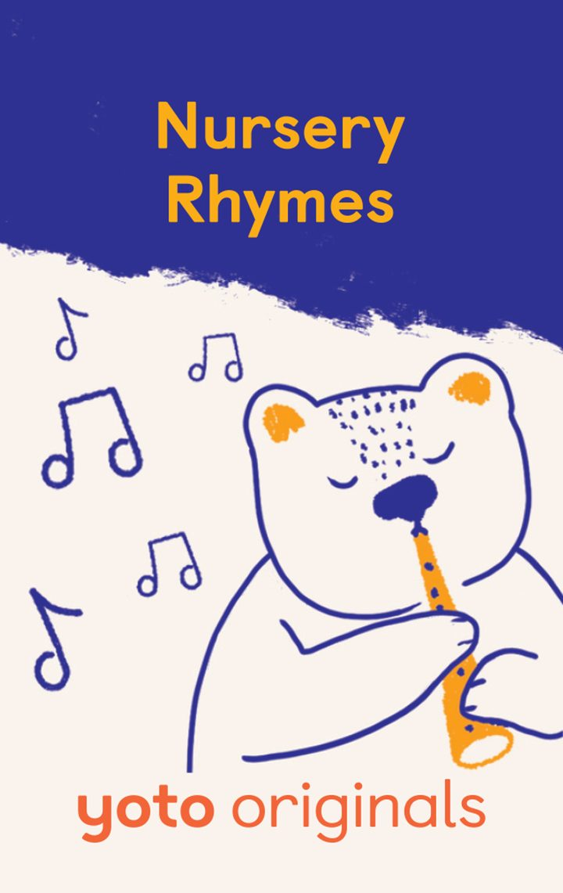
The Hong Kong classics, hand-picked. Folk recordings rather than a Yoto card, hence lower fidelity.

The best English speech input you own: slow, one clear voice, every duration exact.
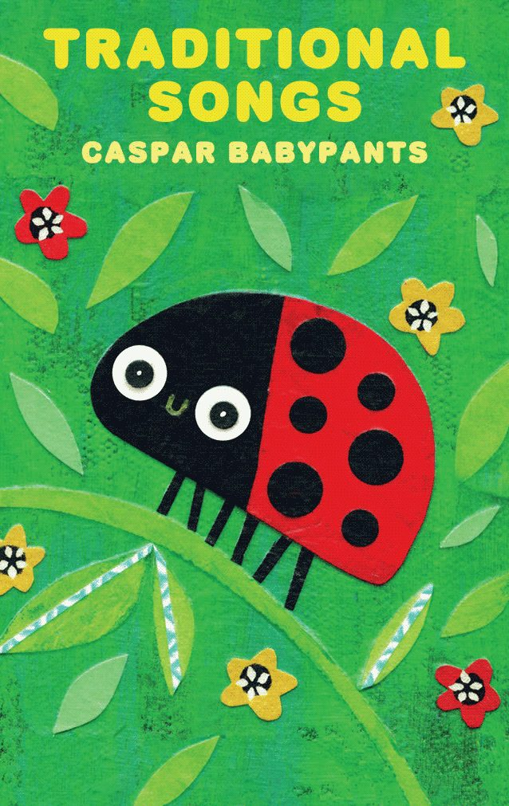
Acoustic, unhurried, traditional rhymes. Durations within 3 seconds.
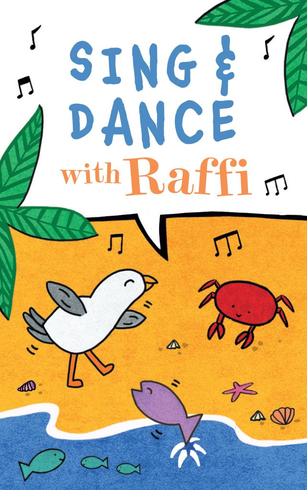
Action songs — he can do them before he can say them.
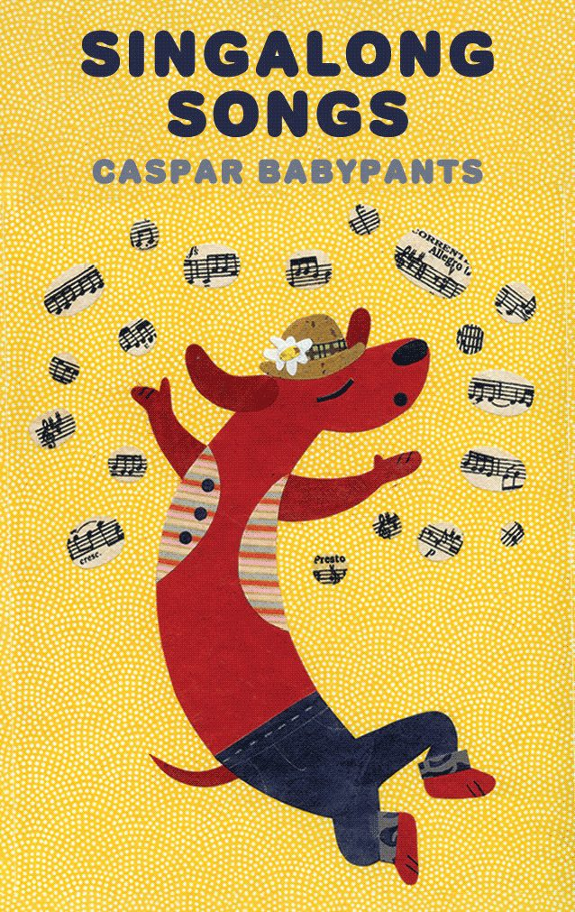
Same acoustic feel, with call-and-response built in.

Your six plus routines and body parts. Five match the card to the second.

What EI SLPs actually name, with a language target per track.
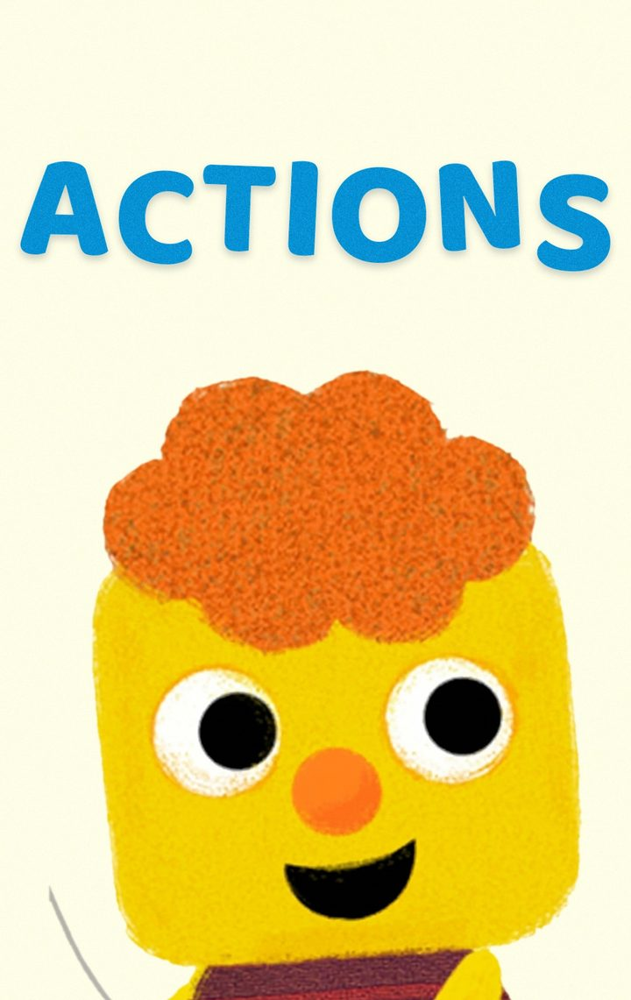
Ten Noodle & Pals verb songs, all new to the library.

Naming and sound imitation, ending in Old MacDonald.

Yes/no and choosing, usable at the table tonight.

One routine a week: shoes, teeth, hands, bath, tidy, bed.

Name, please, turns, thank you, bye — whole phrases, not single words.
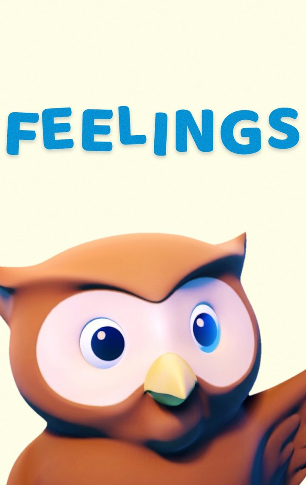
Names the feeling, then gives him a way to settle.

Short, repetitive, affirmations and social scripts. Busier beats than Raffi.

Elmo's World songs, all official, action-based.
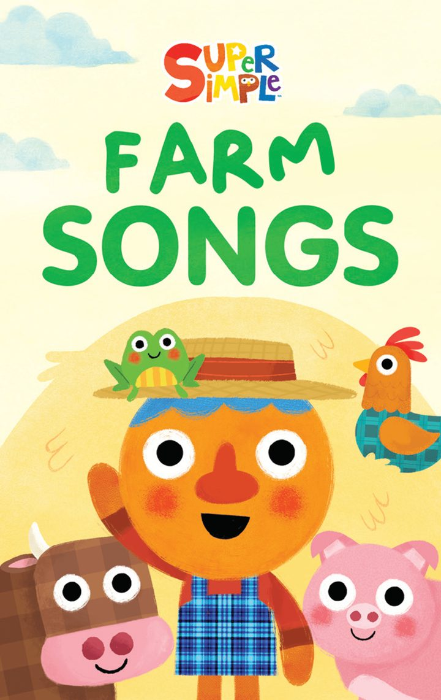
Animal names and sounds, Super Simple. Strong for vocabulary.

13 of 14 durations match exactly; cheerful rather than language-dense.

The ABC and number tracks do the language work; Rubber Duckie is the fun one.
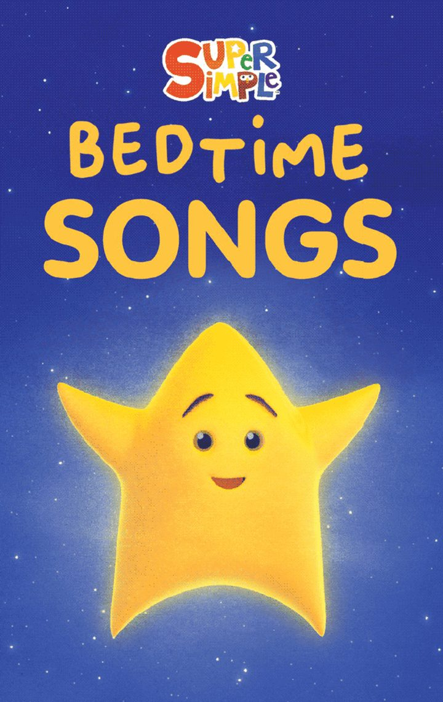
Low word density by design. Use it to end the day, not to teach.

Best sequence songs of the pre-school series. Yoto Original, so recordings differ.

Action songs; different recordings from the card.

Traditional set; different recordings.

Concrete sea vocabulary and counting; Finny uploads run slightly long.
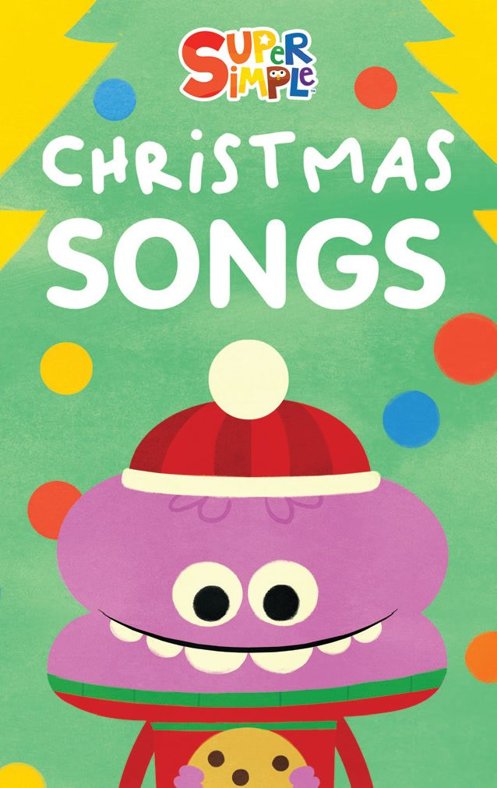
Same quality as the other Super Simple cards — December only.
Concrete vocabulary (dig, lift, spray), but screen-show energy.
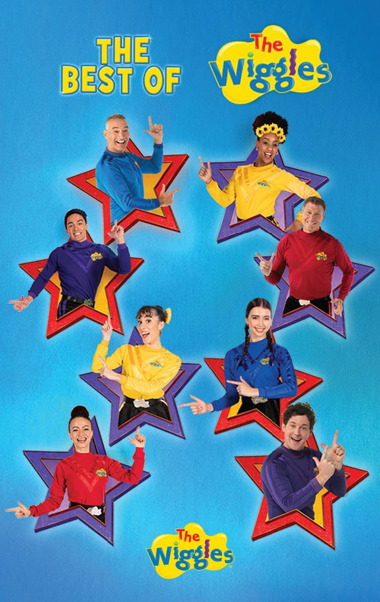
Movement first. Use when he is restless, not to wind down.

Nonsense and wrong words — good for prediction and humour, wilder than the rest.
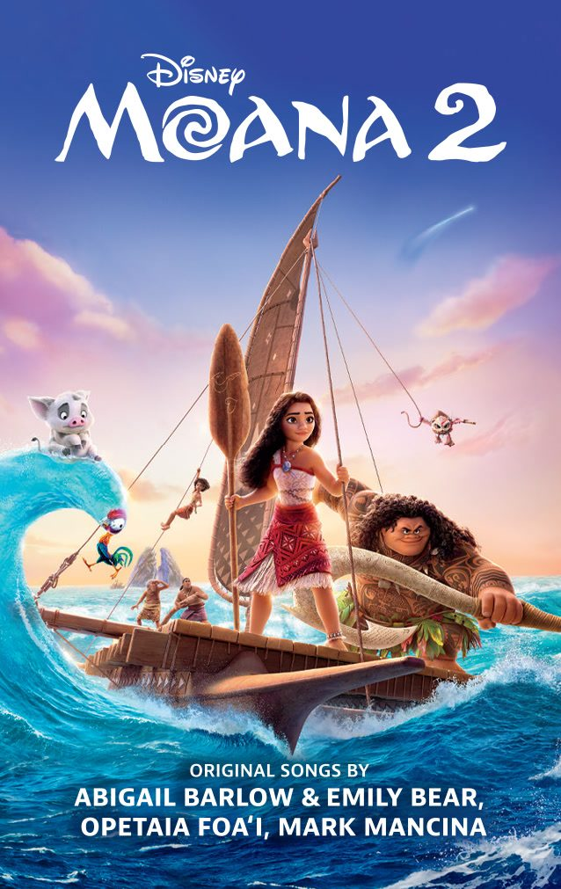
3-minute pop songs, dense lyrics. Great in the car.

Same: exact songs, not speech material.
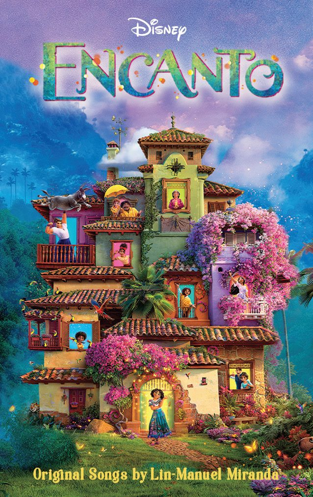
Same.
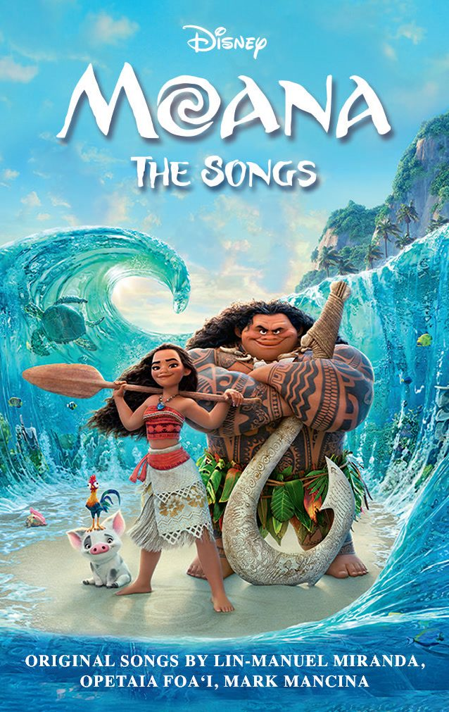
Same.

A few reprises only exist on soundtrack uploaders.

Includes tense score cues; skip those at bedtime.

Perfect links, but it is 5–8 material. Shelf it for two years.